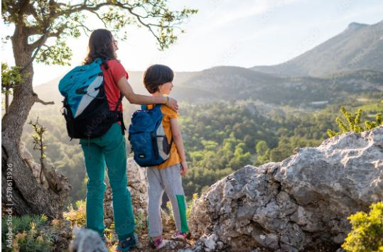

ĐỀ MẪU SPEAKING
Part 1 – Speaking
VD:
Part 1: In this part, I am going to ask you three short questions about yourself and your interests. You will have 30 seconds to reply to each question.
|
|---|
Yesterday I played soccer with my friends in a park near my house. It’s fun and useful. It helped me relax and share happy moments with my friends. Besides, I could stay healthy and keep fit.
I have many friends. They are friendly and kind. They often help me when I need. In free time, we often play sports together.
My favourite film is Tom and Jerry. It’s a cartoon, about a cat and a mouse. It’s funny. It helps me relax after work and share happy moments with my children.
People in country often play badminton and football. It’s fun and good for health. It helps people relax after work and share happy moments with their family and friends. Besides, they can stay healthy and keep fit.
My favourite place is my hometown. This is quiet and peaceful. The weather is very nice. The people are friendly and kind. The food is delicious and cheap.
Yesterday I watched a film on TV. It was a cartoon, called “Tom and Jerry”. It was very funny. I really liked it.
My favourite film star is Tom Cruise. He is from America. He is very friendly and kind. He always helps other people. I really like him.
Halong Bay is a famous place in Vietnam. It’s in Quang Ninh. It’s very beautiful and famous. The weather is very nice. The people are friendly and kind. The food is delicious and cheap.
Last week I went to the cinema with my family. We saw a cartoon, Tom and Jerry. It was funny. I really liked it
In Vietnam we often have three meals in a day. For breakfast, we often have bread or Pho. For lunch and dinner, we have meat, fish, rice, and vegetables
The best way to travel in my country is by motorbike because it is fast and convenient. We can save time and go anywhere
I usually play sports with my friends. It’s fun and good for my health. we can relax after the work and share happy moments. Besides, we can stay healthy and keep fit
In my free time, I like playing sports with my friends. It is fun and useful. It helps me relax after work and share happy moments with my friends.
I am going to learn an English course next month. It is useful for my job because I can speak to people from many countries.
I am in a test room. It is big. There are many people in the room. We are doing Aptis test. Everyone looks focused.
Today I am wearing a T-shirt and a pair of jeans. I like this outfit because it makes me beautiful and comfortable. I often wear this outfit when I go out with friends.
I like spring. It’s beautiful with trees and flowers. The weather is sunny and perfect for outdoor activities.
people in my country like to read newspapers because it is enjoyable and useful. They can relax after work and update information. Besides, they can learn a lot of things.
Today I came here by car. I left home early, at 5AM. It took me 2 hours to come here. The traffic was heavy today
My first school was a primary school in my village. It was small but really beautiful. I had many friends there. We often played games together. It was fun. I really like my first school
There are four people in my family; my husband, my children and me. My husband is a doctor. He worked for a hospital in Hanoi. My children are little. I really love my family.
Last week I visited my best friend. She is living in Ho Chi Minh City. It’s a long time I hadn’t seen her. We talked for hours. We were so happy
I like spring because it is beautiful with trees and flowers. The weather is warm and perfect for outdoor activities.
Yesterday I saw an advertisement while I was on the way home. I saw it on the bus. It was about food. It looks funny and impressive
People in my country like football most because it is fun and useful. It helps people relax after work and share happy moment with friends. Besides, they can stay healthy and keep fit.
Speaking Part 2
VD:
|
|
|---|---|
In the picture I can see two people, a man and a boy. The man is about 40 years old and the boy is about 10 years old. I think they are father and son
They are at home
They are eating breakfast and talking.
They are wearing casual clothes (formal clothes, uniform)
They are smiling.
They look happy (focused, bored)
On the table, I can see some food and drink
Behind them, I can see a sofa
+ The weather in the picture is very nice. It is sunny and perfect for outdoor activities.
+ The weather in the picture is very hot. The sun is shining (brightly)
+ The weather in the picture is very cold. I can see a lot of snow and the people are wearing warm clothes.
In the background of the picture, I can see a mountain and many trees
+ I really like this picture because it reminds me of my father (my village, my childhood…)
+ I really like this picture because it shows happiness of a family
+ I really like this picture because it shows love between people and animals
VD:
|
|
|---|---|
 |
|
|---|---|
Question 2: Tell me a time/the last time/the first time you did something… (thường yêu cầu kể cho họ biết 1 lần mình làm việc gì đó trong quá khứ)
As far as I can remember, it was last month
Last week
It was about 10 years ago when I was a student
It was about 10 years ago when I was small
It was 2 days ago
I (went shopping) for clothes
I watched a movie
I used public transport
I went with my friends/family
I did it by myself
I bought a T-shirt, a pair of jeans and a dress. They are beautiful but a bit expensive. I spent 500 dollars (lần đi mua sắm)
I played with my friends. We played in a park near my house. We played for about 60 minutes.
I went to Halong Bay with my famil by car. It’s beautiful and famous. We did a lot of interesting things there. We went swimming, ate seafood, climbed the mountain.
On that day, the weather was nice and I was going to work when I saw an accident. A boy was laying on the ground. I immediately took him to the hospital nearby (lần giúp đỡ ai đó)
It’s fun to go shopping with friends. It helped me relax after work
It’s fun and relaxing. It helped me relax after work and share happy moments with my family/friends
Question 3: Câu hỏi tại sao mình làm việc gì đó, lợi ích của việc đó
VD: Why do people play sports? = What are the benefits of playing sports?
| KHUNG: There are some reasons why ….. The first reason is that ……..Another reason is that ……..One more reason is that ……… |
Có thể đưa ra các lí do liên quan đến các yếu tố sau
+ It is + adj (fun/ enjoyable/interesting/ relaxing)
+ It helps me/people relax after work and share happy moments with family and friends
+ It is good for (my/their) health.
+ It helps (me/them) stay active and improve my/their health.
+ Also, it allows me to keep fit and prevent health problems
+ It is cheap/economical/affordable.
+ It helps me/them save a lot of money for essential things like healthcare or education
+ It is convenient
+ it helps me (learn/read/buy things) anywhere at anytime
+ It is useful
+ It helps me learn a lot of things/ broaden my mind
+ It is good for the environment
+ It helps reduce traffic jams and pollution
+ It is useful
+ It helps me/people learn many skills which are related to (liên quan đến) communication or management
VD: Questions
Why do people play sports?
What are the benefits of playing sports?
VD: There are some reasons why people play sports. The first reason is that it is fun. It helps people relax after work and share happy moments with family or friends. Another reason is that it is good for their health. It allows them to improve their health, keep fit and prevent health problems. One more reason is that sports help people to make new friends or build relationships with others
Speaking Part 3
VD đề Part 3
Part 3: In this part, I'm going to ask you to compare two pictures, and I will then ask you two questions about them. You will have 45 seconds for each response. 1. Tell me what you see from the two picture? 2. What are some benefits of shopping in these 2 places? 3. Where do you think people will shop in the future? |
|---|
Question 1: Yêu cầu miêu tả tranh
Tell me what you see from the two pictures
Describe the two pictures
Compare the two pictures
VD:
Part 3: In this part, I'm going to ask you to compare two pictures, and I will then ask you two questions about them. You will have 45 seconds for each response. (15p)
Cách 1: so sánh 2 tranh đồng thời
+ Picture 1 shows a man eating at home while picture 2 shows some people eating in a restaurant + In picture 1 I can see some fruits and drink but in picture 2 I can see some fast food
+ the people in both pictures are wearing casual clothes and looks happy. It seems that they are enjoying their time |
|---|
Cách 2: miêu tả từng tranh 1 (dễ hơn)
|
|---|
Question 2: Thường hỏi “bạn thích cái nào hơn?/ Điểm hấp dẫn của 2 cái đó là gì?...)
Which do you prefer?
What are the attractions of the two …?/ What is the appealing of ….?
What are the benefits of the two …..?
Do people in your country love indoor or outdoor sports
KHUNG
|
|---|
VD 1: Which food do you prefer?
|
|---|
VD 2: watch movies at home – watch movies at the cinema
|
|---|
VD 3: beach - mountain
|
|---|
Question 3: (hay hỏi ý kiến cá nhân)
Where do you think (people will shop in the future)?
Playing games is for children, not adults. What do you think?
Technology makes our life easier. Do you agree or disagree?
|
|---|
VD: Why do people like to eat different types of food?
| People may have different ideas about this depending on their interests. I think there are some reasons why people like to eat different types of food. The first reason is that different kinds of food have different tastes so people want to try all. This can give them special experiences. Another reason is that different kinds of food provide different vitamins and nutrition so people need to eat many kinds of food |
Speaking P4
KHUNG - Speaking
(To be honest, I’m so nervous now (because this is the most difficult part of the test.) However, I will try my best (and hope you can understand what I am saying) – nói trong trường hợp đề chưa chuẩn bị
Although this happened a long time ago, everything is still in my mind and I will never forget.
|
|---|
VD:
Part 4: 1’ think – 2’ speak
|
|---|
At first, I felt very nervous because it was my first time. But later on, I felt more confident
I think it is a good idea because extreme sports can be dangerous. Adults usually know how to keep safe and make smart choices. Young people should learn and practice before trying extreme sports. |
|---|
TỔNG HỢP SPEAKING PART 4
Tổng hợp được 48 bộ câu hỏi Part 4 khác nhau (đã bỏ trùng) từ 57 file đề trong thư mục Google Drive của chị. Mỗi bộ gồm 3 câu hỏi theo đúng cấu trúc thật: câu 1 - kể một tình huống trong quá khứ, câu 2 - cảm nhận, câu 3 - câu hỏi mở rộng/quan điểm.
1. Tell me about a time when you had possession of something valuable? (1 lần có món đồ gì đó giá trị)
- Why was this possession important to you and how did you feel when you had it?
- Why do you think people should share their possessions with others? (vật sở hữu)
2. Tell me about a time when you worked in a team. (làm việc theo nhóm)
- How do you feel when you work in a team?
- What are the advantages/benefits of teamwork?
3. Tell me about a time when you wore an important outfit for a special occasion. (mặc một bộ đồ quan trọng cho một dịp đăcj biệt)
- Why do people like to dress up (trưng diện) or wear formal clothes on special events?
- Do you think school uniforms or workplace dress codes (quy định về ăn mặc) are necessary?
4. Tell me about a time when you used technology to solve a problem. (sử dụng công nghệ để giải quyết 1 vấn đề)
- What are the advantages of using technology in daily life?
- Do you think people rely too much on (phụ thuộc) technology nowadays? Why or why not?
5. Tell me about a time when you learned a new skill/something new.
- How did you feel when you successfully mastered that skill? (thành thục)
- What is the best way for people to learn and improve new skills in their daily life?
6. Tell me about a time when you were in a hurry. (hối hả làm viêhc gì đó)
- How did you feel?
- If you're running late for something, how do you typically feel?
7. Tell me about a time when you attended a memorable sports event. (tham dự 1 sự kiện thể thao đáng nhớ)
- Why do you think some sports events attract millions of viewers worldwide? (thu hút hàng triệu người xem)
- Do you agree that hosting international sports events is beneficial for a country? (đăng cai sự kiện thể thao qte thì có lợi cho đất nước)
8. Tell me about a time you asked a question.
- Why do some people feel nervous (cảm thấy lo lắng) to ask questions in public (ở nơi đôg người)?
- How does asking questions help students learn better at school?
9. Tell me about a time when you had to face a difficult challenge (đối mặt với 1 thách thưcs) in your life.
- How did your feelings change before and after you overcame that challenge? (vượt qua)
- What are the benefits for people when they face and conquer challenges? (chinh phục)
10. Tell me about a time when you tried hard to achieve something (cố gắng đạt dc điều gì đó)
- How did you feel?
- What do people need to do to achieve their goals
11. Tell me a time when you were in a hurry (hối hả làm gì đó)
- How did you feel?
- Modern life makes us busier and more rushed?(cs hiện đại làm chúng ta bận rộn và hối hả) what do you think?
12. Tell me about a time when you couldn’t buy the thing that you want? (k mua dc đồ mình muốn)
- How did you feel that time?
- Material possession (vật chất) alone cannot make people happy. Do you agree/ disagree?
13. Tell me a time you were surrounded by nature (hoà mình vào thiên nhiên)
- How did you feel?
- What should we do to protect the nature? (bảo vệ)
14. Describe a time when you visited someone.
- What do you think about having unexpected visitors? (có khách k hẹn trước)
15. Describe a time when you learnt something new.
- What was the most difficult thing for you?
- It is never too old/late to learn new things? Do you agree or disagree? What do you think?
16. Describe a time you saw an impressive work of art. (nhìn thấy 1 tác phẩm nghệ thuật ấn tượng)
- How did you feel?
- Is it impossible (k thể) to teach children to be creative (sáng tạo)? Do you agree?
17. Describe a time you were very busy
- How did you feel ?
- If people work less (làm việc ít đi), will their lives become better?
18. Tell me about a time you read a good/interesting book
- How did you feel?
- Some people love watching films more than reading books. What do you think?
19. Talk about a time when you asked a question.
- Is it easy to ask a question?
- Some subjects are more difficult for many people. What do you think?
20. Tell me a time you watched or played an extreme sport (môn thể thao mạo hiểm)
- How did you feel when you played extreme sports
- Only adults are allowed (chỉ người lớn dc phép) to play extreme sports. What do you think about it?
22. Tell me about a time you met an impolite person. (gặp một người mất lịch sự)
- How did you feel?
23. Tell me about a time you helped someone (giúp ai đó)
- How did you feel?
- How to encourage (khuyến khích) people to help others?
24. Tell me a time you received a gift/present (nhận. 1 món quà)
- How did you feel about this gift?
- Do you prefer handmade gift or gift bought in store?
26. Tell me a time when you received good news (an important phone call/an important message)
- How did you feel?
- Why do people like to celebrate good news? (ăn mừng)
27. Tell me about a time when you read an interesting book.
- Why do some people prefer reading books to watching movies?
- Do you think e-books will completely replace (thay thế hoàn toàn) printed books in the future? Why or why not?
29. Tell me about a time when you successfully completed a task. (hoàn thành 1 việc gì đó thành công)
- How did you feel after completing that task?
- Why is it important to complete tasks successfully?
30. Describe a time when you have to do something you don't want to? (phải làm 1 việc gì mà mình k thích)
- How did you feel when it ended?
- How do people motivate themselves (tự tạo động cơ) to do things that they don't like?
34. Tell me the last time (lần gần đây nhất) you used the Internet?
- How do you feel when you use the Internet?
- Some people say that the Internet has a bad impact (ảnh hưởng xấu) on our lives. What do you think?
35. Tell me about a time when you wanted to change yourself.
- Why did you want to make that change?
- Do you think changing yourself is important for personal growth? (sự pt cá nhân)
37. Tell me about a time you solved a problem (= used technology to solve a problem)
- Tell me about a sports game you went to or watched on TV?
38. Tell me about a time you met new people
- Why did you meet them?
- What are the benefits of making new friends.
39. Tell me a time you visited a city/ a new place
- How do you feel when living in an urban environment (môi trường đô thị)
- What should people do to improve the quality of life? (cải thiện chất lượng cs)
40. Tell me a time you went to visit an amusement park (thăm 1cv giải trí)
- How did you feel?
- Do people in your country often visit amusement parks?
41. Tell me about a time when you met or talked to a foreigner.
- Why do some people feel shy or nervous when communicating with strangers from other countries?
- Do you think interacting with people from different cultural backgrounds (nền tảng văn hoá) is important?
Đề thêm
42. Tell me about a memorable experience you had related to an important cultural event.
- What do people usually do during important cultural events in your country?
- Do you think cultural events are important for people? Why or why not?
43. Tell me about a time when you received negative feedback.
- How did you feel about that feedback?
- Do you think negative feedback is helpful for people?
44. Tell me about a time when you were responsible for something important.
- How did you feel during that experience?
- Why is being responsible important in life?
Coppy 41 tình huống cho vào chatGPT, “Hãy thiết kế 4 câu chuyện
cho 41 tình huống này, bạn tự sắp xếp các tình huôngs nào đi với nhau
cho hợp lý, độ dài môi câu chuyện khoảng 100 từ đơn giản, dễ, câu
ngắn”
vào trang https://luvvoice.com/vn#google_vignette chuyển sang file
mp3, cop vào đt và học thuộc
Câu hỏi đầu tiên của Part 4 luôn là "kể một tình huống trong quá khứ", nhưng có quá nhiều tình huống khác nhau để học hết. Thay vì học thuộc từng đề, học viên chỉ cần học chắc 4 câu chuyện dưới đây (khoảng 100 từ/câu chuyện, có kèm cảm xúc) rồi linh hoạt đổi vài chi tiết (địa điểm, người, đồ vật...) để trả lời được rất nhiều tình huống khác nhau - mỗi câu chuyện áp dụng được cho khoảng 7-8 tình huống.
(97 từ)
| Last summer, I visited my grandparents in the countryside with my family. My children felt excited because they had never been there. The countryside was so quiet and peaceful. There was a lake and a lot of green trees. In the afternoon, we played games in the garden, and we all laughed a lot. We felt really happy. The trip helped me relax after busy days and share happy moments with my family |
Áp dụng được cho các tình huống:
Tell me about a time when you visited someone.
Tell me a time you spent time with your friend.
Tell me a time you were surrounded by nature.
Tell me a time that you visited a new place.
Tell me a time you laughed a lot.
Tell me about your last holiday.
(101 từ)
Last year, I met a foreign tourist near the train station. He wanted to find his hotel and asked me for help. I tried to speak English with and used Google Map to find the hotel. Finally, I could help him to find the hotel and he helped me to practice English. I felt very happy and proud of myself because I had tried my best. |
|---|
Áp dụng được cho các tình huống:
Tell me a time you helped someone.
Tell me about a time when someone helped you.
Tell me about a time when you used technology to solve a problem.
Tell me about a time when you met or talked to a foreigner.
Tell me about a time you solved a problem.
Tell me about a time when you worked in a team.
(104 từ)
Một lần đi mua váy gấp cho đám cưới bạn Last month, I had my wedding. Before the wedding, I went to a shopping centre to find a beautiful dress but I couldn’t find any. was in a hurry to buy a new dress for my friend's wedding. I went to a shop, but they didn't have my size, so I couldn't buy the dress I wanted. I felt worried and sad. Then my sister gave me a beautiful dress as a gift. I wore it to the wedding, and I felt happy and confident. I was very grateful to my sister for her kindness |
|---|
Áp dụng được cho các tình huống:
Tell me about a time when you couldn't buy the thing that you wanted.
Tell me about a time when you wore an important outfit for a special occasion.
Tell me a time you received a gift.
Tell me about a time when you were in a hurry.
(105 từ)
| Last year, I decided to take an Aptis test to get a good job. I was very busy because I had to study day and night, and I often felt tired. It was difficult for me at first, but I learned a lot of new words and skills. I practiced English every day before the test. Finally, I received the good news that I had passed with a high score. I felt very happy and proud of myself." |
Áp dụng được cho các tình huống:
Tell me about a time when you tried hard to achieve your goal.
Tell me about a time when you received good news.
Tell me about a time when you successfully completed a task.
Tell me about a time when you had to face a difficult challenge in your life.
Tell me about a time you learned something new/a new skill
Tell me about a time when you felt tired.
Tell me about a time you were very busy.